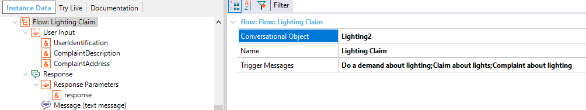
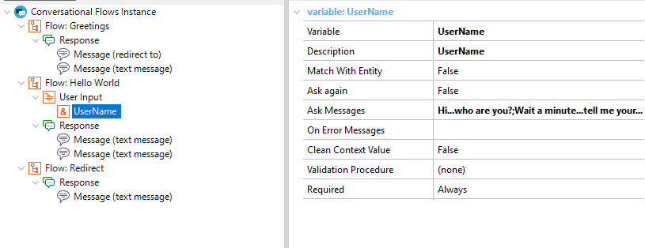

Chatbot User Input
The User Input represents the input parameters of the Flow of a Conversational instance.
That is, the different parameters that the chatbot will ask the user when it detects the intent related to the flow. The User Inputs are added automatically to the structure and are inferred from the In parameters of the Conversational Object. In the next Flow, the Conversational Object property is set to "Lighting2".  The User Inputs automatically added to the flow match the parameters of the "Lighting2" procedure, which are as follows: parm(in:&UserIdentification, in:&ComplaintDescription, in:&ComplaintAddress,out:&response); If you add a user input (which is not inferred from the Conversational Object), you have to define first the variable on which this user input will be based on.  ImportantConsider the following if you are adding the User Inputs manually:
See alsoHowTo: Build a chatbot using GeneXus |